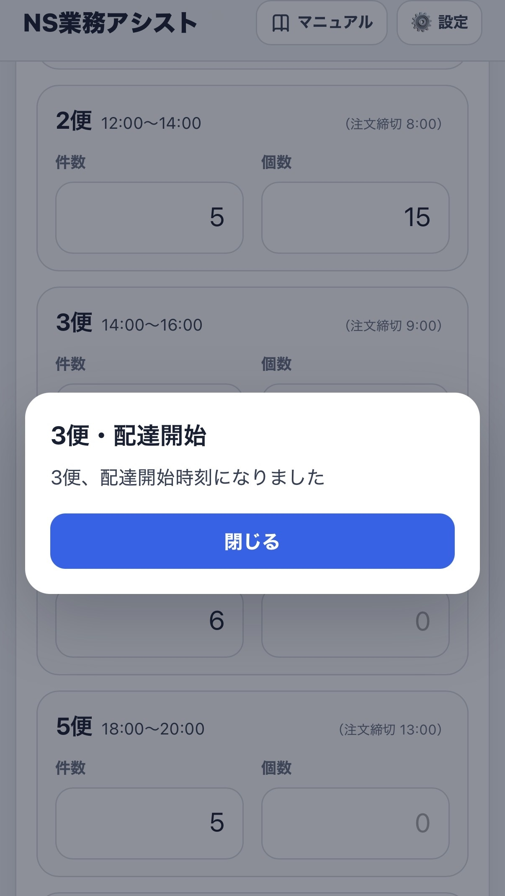

通知・業務アシスト
業務アシストは、各種作業時刻を知らせる通知と、ShinQLOへの入力など重要操作を確認する通知を使い分けます。
デフォルトではONの状態になっています。
OFFにして全ての案内と各種通知を発生しないようにする選択もできますが、特にShinQLOへの入力忘れ等を防ぐための本アプリの重要な機能となっていますので、極力ONの状態で使用していただくことを推奨します。
また、業務アシスト機能はメイン画面の「稼働開始」をタップすることで発動する仕様になっているため、稼働開始がタップされていない休日に通知が入ることはありません。
積み込み・配達開始のお知らせ
設定された時刻になると、OSの通知バナーと標準通知音でお知らせします。回答操作や再通知はありません。
該当便の件数を0件・0個として入力した場合、その便の積み込み・配達開始通知は行いません。
積込時刻通知、および配達開始時刻通知は、業務アシストONの場合でも、不要な場合は個別に通知をOFFにできます。
通常のお知らせを開いたとき
通知をタップしてアプリを開くと、通知内容がアプリ内にも表示されます。内容を確認したら「閉じる」を押すと通常画面へ戻ります。

ShinQLO重要確認通知
出庫報告や1便1件目の到着報告など、入力忘れを防ぐための確認通知です。通知からアプリを開くと、確認内容に応じた選択肢が表示されます。
「入力済み」
確認完了として扱い、その項目は再通知しません。
「まだ」
未完了として扱い、5分後にもう一度通知します。
出庫報告確認
出庫時のタイミングでShinQLO入力することを忘れていないかを確認する、リマインド通知です。
デフォルトの時刻ではなく、このくらいの時刻に確認してほしいと感じる時間へ、ご自身で自由に変更することも可能です。
この通知時、「まだ（出庫していない）」を選択した場合、または通知に回答しなかった場合には、5分後に再通知されます。そこでも同様に「まだ」を選択した場合は、2回目の再通知は行いません。
1便1件目到着確認
当日最初の配達開始時のShinQLO入力忘れがないかを確認する通知です。
この通知も上記の出庫報告確認と同様、「まだ（到着していない）」を選択した場合、または通知に回答しなかった場合は、5分後に再通知されます。
2便目からの配達となる場合には、その時間に合わせた出庫報告確認や、配達開始時の到着確認通知は入りませんので、そういったケースでの入力忘れにご注意ください。
出庫処理と1件目の配送がないため、1便に紐づく出庫確認・1便1件目到着確認は行いません。
業務開始・終了時の案内
設定に応じて、業務開始・終了の操作時に音声アナウンスまたは短いアラート音を再生します。積み込み・配達開始やShinQLO確認には、端末の標準通知音を使用します。
端末側の設定
音量、消音モード、集中モード、通知許可などによって、通知音や表示方法が変わる場合があります。通知が届かない場合は、端末の通知設定も確認してください。
Androidでは、機種・OS・Chromeのバージョンによって通知音や表示方法がiPhoneと異なる場合があります。